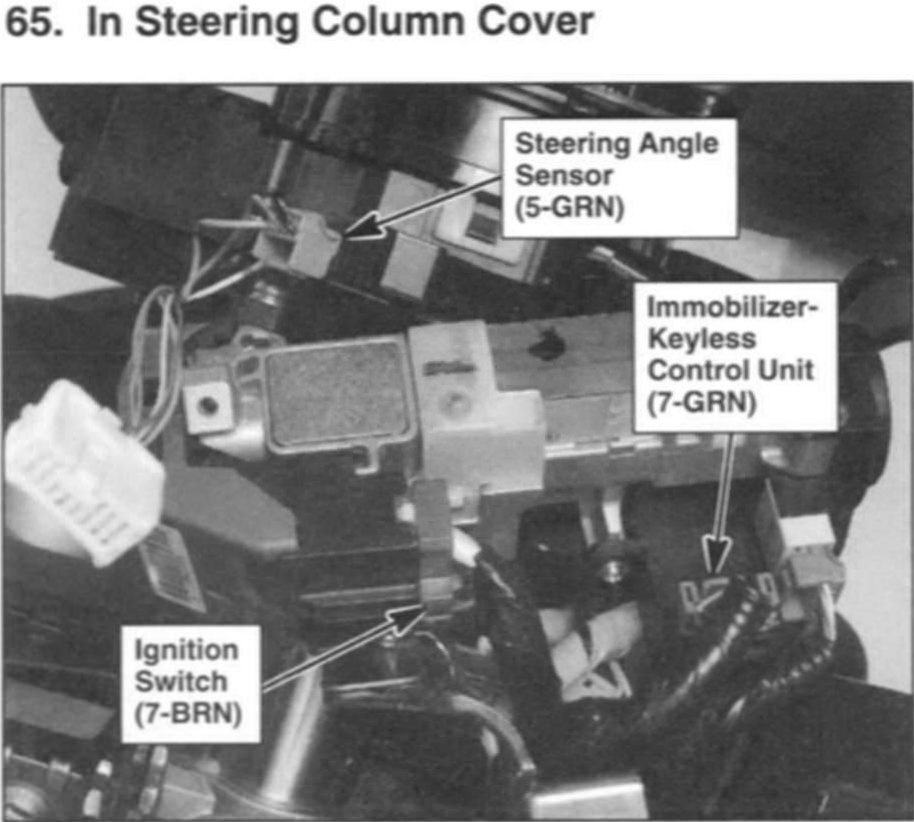

Operation CHARM
: Car repair manuals for everyone.
Home
>>
Acura
>>
2007
>>
MDX V6-3.7L
>>
Repair and Diagnosis
>>
Steering and Suspension
>>
Steering
>>
Sensors and Switches - Steering
>>
Steering Angle Sensor
>>
Locations
Steering Angle Sensor: Locations
